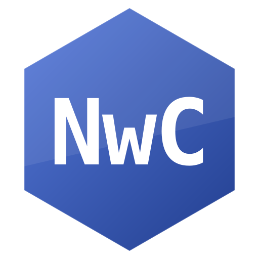

About the project
NwOS is a small hobby operating system built completely from scratch. It has its own bootloader written in NASM, a C kernel, a simple on-disk filesystem, a text-mode shell with a scrollback buffer, and a compiler (NwC) with its own lexer and parser.

Two branches
2.x — Graphics active
Modern version with VGA graphics, mouse, GUI menu, games (Snake, Castle NwOS, Talons, 3D Demo), RAM filesystem and text editor.
View branch 2.x1.x — Legacy console
First version of NwOS. Text-mode shell only. Preserved for history, not actively developed.
View branch 1.xFeatures (2.x)
- Custom bootloader (NASM, real mode → protected mode)
- 32-bit C kernel running in ring 0
- VGA graphics 640×480×16 with double buffering
- PS/2 keyboard + mouse drivers
- RAM filesystem with directories
- Text editor
- Games: Snake, Castle NwOS (raycasting), Talons, 3D Demo
- NwC — a compiler for the NwC language
Download
Latest stable version: v2.0.0-beta
Grab the image from GitHub Releases,
run it in QEMU with -drive format=raw,if=floppy,file=os.img.
Archive of versions
Shown version of branch: 2.x. Click button at top, to switch